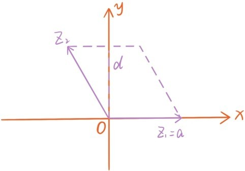
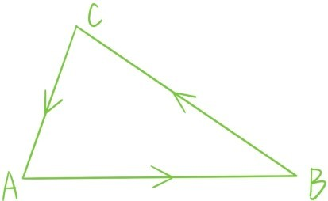

复数和向量之间可以建立一一对应关系。
(a+bi)↔(a,b)
复数有乘法运算，向量有内积运算，都满足交换律，分配律，所以我们可以问这样一个问题：
问题59：复数的乘积运算和向量的内积运算有何关联？
如果仔细观察复数z1=a+bi和z2=c+di的乘积
(a+bi)(c+di)=ac-bd+(ad+bc)i
和对应的向量内积
{a,b}·{c,d}=ac+bd
发现向量内积用复数乘积表示正是z1· 的实部
其实z1· 的实部能表示向量内积，能表示角度、长度，绝非偶然，其实角度，长度在旋转变换下都是保持不变的，而z1· 这个表达式在旋转下也是保持不变的。
为什么z1· 这个表达式在旋转下是保持不变的？注意两个向量z1和z2逆时针旋转角度θ从复数的角度来看就是乘以e=cosθ+sinθi。这时表达式z1· 变成。
向量内积，或者z1· 的实部，有非常丰富的几何内涵，可以表示角度（余弦）、长度，在平面几何证明中展现出巨大的威力，所以我们忍不住会问这样一个问题：
问题60：z1· 的虚部Im(z1· )是否也有几何意义？
注意
这已经是第三次碰到这种表达式了，希望Im(z1· )也会有重要的几何意义。利用旋转不变性，只需考虑b=0，z1=a是正实数的情形，因为一个旋转变换可以将非零复数z1变成正实数。这时Im(z1· )=-ad，在向量z1和z2张成的平行四边形中，以z1为底的高就是|d|，所以平行四边形的面积就是|Im(z1·z )|。

Im(z1· )的符号取决于z2是在x轴的下方还是上方，或者说取决于z1在平行四边形内角中旋转到z2的旋转方向是逆时针还是顺时针，顺时针则d为正，逆时针则d为负。面积，顺时针旋转，逆时针旋转这些几何意义在旋转变换下也是不变的，所以就得到表达式Im(z1· )=的几何意义：
Im(z1· )表示向量z1和z2张成的平行四边形的带符号面积，z1在平行四边形内角中旋转到z2的方向的旋转方向是顺时针时符号为正，逆时针时符号为负。
这个结论还和下面这个问题密切相关：
问题61：给定坐标平面上3个点A(x1,y1)，B(x2,y2)，C(x3,y3)，如何求△ABC的面积，如何判断沿三角形的边从点A到点B再到点C再回到点A的行走方向是顺时针还是逆时针？

实际上行走方向是顺时针当且仅当在∠BAC中向量是顺时针旋转到，而=（x2-x1,y2-y1），=(x3-x1,y3-y1)，所以根据Im(z1· )=的几何意义，△ABC的面积等于
符号为正当且仅当从点A到点B再到点C再回到点A的行走方向是逆时针。
注意△ABC的面积为零当且仅当3个点A，B，C共线。所以这里也给出了判断平面三点是否共线的一个简易方法：
坐标平面上3个点A:(x1,y1)，B:(x2,y2)，C:(x3,y3)共线当且仅当
提问时间
8.4.1 利用复数的三角表示重新推导出Im(z1· )的几何意义。
8.4.2 在坐标平面上给定3个点A(-2,3)，B(2,2)与C(3,1)，求△ABC的面积，并判断从点A到点B再到点C再回到点A的行走方向是顺时针还是逆时针。
8.4.3 判断坐标平面上3个点A(-3,3)，B(-1，2)与C(1,1)是否共线。
8.4.4 利用本节关于平行四边形，三角形面积的结论回答第二章问题32和问题33。